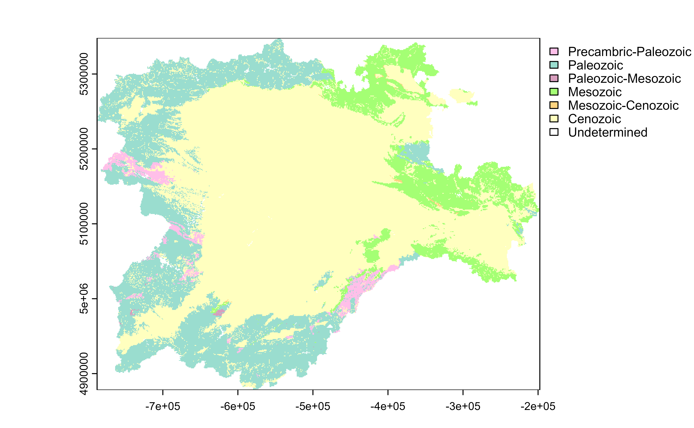
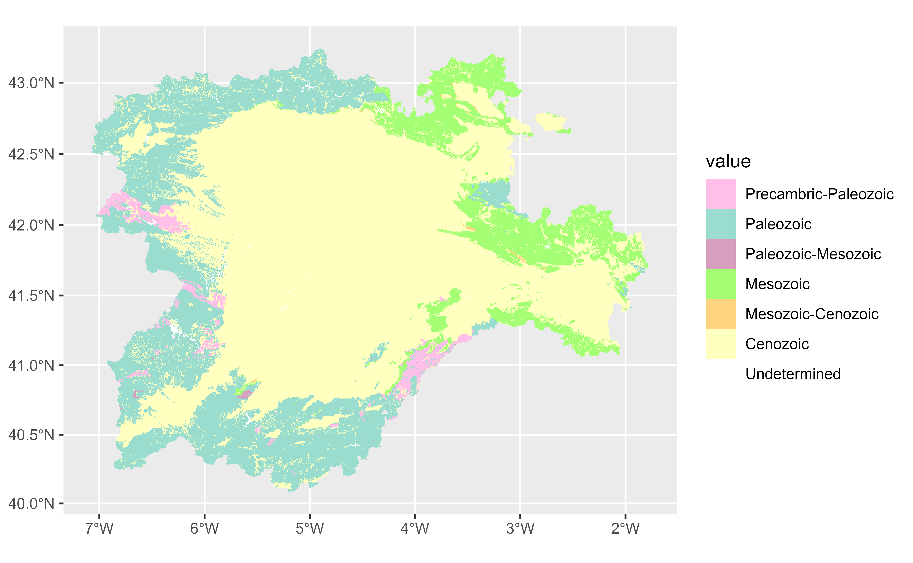
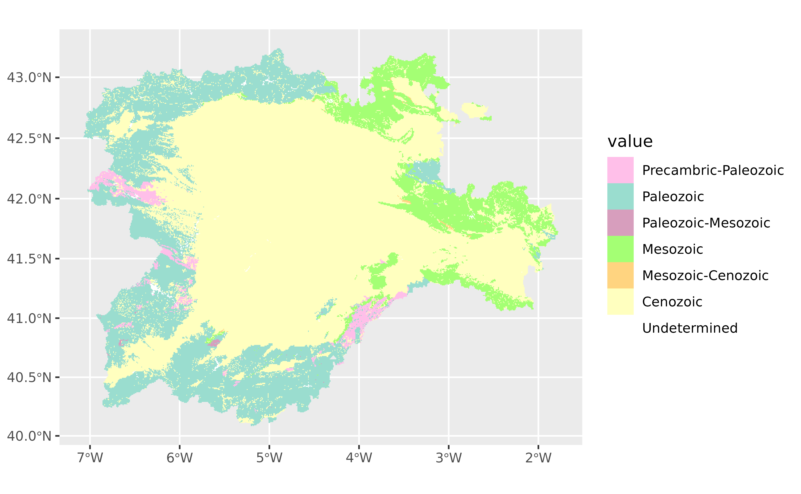

Some categorical SpatRaster objects may have an associated color table.
This function extract those values. These functions generates scales and
vector of colors based on the color table terra::coltab() associated to a
SpatRaster.
You can also get a vector of colors named with the corresponding
factor with get_coltab_pal().
Additional arguments ... would be passed on to
ggplot2::discrete_scale().
Note that tidyterra just documents a selection of these
additional arguments, check ggplot2::discrete_scale() to see the full
range of arguments accepted.
Usage
scale_fill_coltab(
data,
...,
alpha = NA,
na.translate = FALSE,
na.value = "transparent",
drop = TRUE
)
scale_colour_coltab(
data,
...,
alpha = NA,
na.translate = FALSE,
na.value = "transparent",
drop = TRUE
)
get_coltab_pal(x)Arguments
- data, x
A
SpatRasterwith one or several color tables. Seeterra::has.colors().- ...
Arguments passed on to
ggplot2::discrete_scalebreaksOne of:
minor_breaksOne of:
NULLfor no minor breakswaiver()for the default breaks (none for discrete, one minor break between each major break for continuous)A numeric vector of positions
A function that given the limits returns a vector of minor breaks. Also accepts rlang lambda function notation. When the function has two arguments, it will be given the limits and major break positions.
labelsOne of the options below. Please note that when
labelsis a vector, it is highly recommended to also set thebreaksargument as a vector to protect against unintended mismatches.NULLfor no labelswaiver()for the default labels computed by the transformation objectA character vector giving labels (must be same length as
breaks)An expression vector (must be the same length as breaks). See ?plotmath for details.
A function that takes the breaks as input and returns labels as output. Also accepts rlang lambda function notation.
limitsOne of:
NULLto use the default scale valuesA character vector that defines possible values of the scale and their order
A function that accepts the existing (automatic) values and returns new ones. Also accepts rlang lambda function notation.
expandFor position scales, a vector of range expansion constants used to add some padding around the data to ensure that they are placed some distance away from the axes. Use the convenience function
expansion()to generate the values for theexpandargument. The defaults are to expand the scale by 5% on each side for continuous variables, and by 0.6 units on each side for discrete variables.
- alpha
The alpha transparency: could be
NAor a number in [0,1]. See argumentalphainscale_fill_terrain_d().- na.translate
Should
NAvalues be removed from the legend? Default isTRUE.- na.value
Missing values will be replaced with this value. By default, tidyterra uses
na.value = "transparent"so cells withNAare not filled. See also #120.- drop
Should unused factor levels be omitted from the scale? The default (
TRUE) removes unused factors.
Value
The corresponding ggplot2 layer with the values applied to the
fill/colour aesthetics.
Examples
library(terra)
# Geological Eras
# Spanish Geological Survey (IGME)
r <- rast(system.file("extdata/cyl_era.tif", package = "tidyterra"))
plot(r)

# Get coltab
coltab_pal <- get_coltab_pal(r)
coltab_pal
#> Precambric-Paleozoic Paleozoic Paleozoic-Mesozoic
#> "#FFBFE9" "#9ADDCF" "#D79EBD"
#> Mesozoic Mesozoic-Cenozoic Cenozoic
#> "#A4FF74" "#FFD480" "#FFFFBF"
#> Undetermined
#> "#FFFFFF"
# \donttest{
# With ggplot2 + tidyterra
library(ggplot2)
gg <- ggplot() +
geom_spatraster(data = r)
# Default plot
gg

# With coltabs
gg +
scale_fill_coltab(data = r)
#> Scale for fill is already present.
#> Adding another scale for fill, which will replace the existing scale.

# }